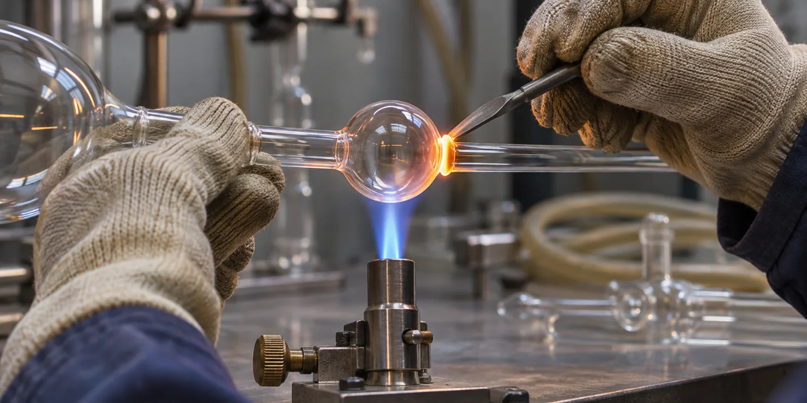

Informação que ajuda a decidir.
Produtos e serviços organizados por necessidade, sem ruído.
A Plena-Lab
Uma empresa brasileira dedicada a aproximar laboratórios das vidrarias, equipamentos e soluções de que precisam.

Nossa proposta
A Plena-Lab atua com vidrarias e produtos para laboratórios, conectando conhecimento técnico, variedade de portfólio e atendimento próximo.
Esta proposta digital foi desenhada para tornar essa experiência mais clara: apresentar as áreas de atuação, facilitar a descoberta de produtos e indicar o canal certo para cada necessidade.
Os textos institucionais desta página são demonstrativos e devem ser validados pela direção antes da publicação definitiva.
Princípios
Clareza, proximidade e rigor técnico orientam cada ponto de contato.
Produtos e serviços organizados por necessidade, sem ruído.
Canais diretos para orientar dúvidas e demandas especiais.
Catálogo, loja e área de revenda conectados a uma mesma experiência.
Próximo passo